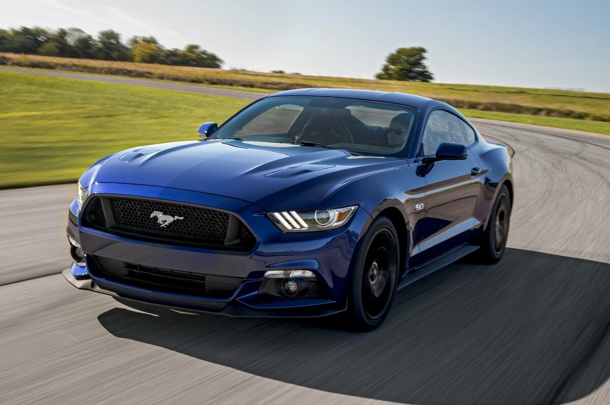

Изображения
Bugatti Veyron гиперкар компании Bugatti, производившийся с 2005 по 2015 год. Назван в честь французского легендарного гонщика Пьера Вейрона, победителя 1939 года в гонках 24 часа Ле-Мана[1]. В 2010 году журналы Top Gear и Robb Report присудили награду «Автомобиль десятилетия» Bugatti Veyron и модификации Grand Sport соответственно[2]. Модификация Super Sport в 2010 году побила мировой рекорд скорости и стала самым быстрым серийным автомобилем в мире[3]. Производство Veyron на данный момент завершено, всего было продано 450 автомобилей: 300 купе и 150 родстеров[1]. Его преемником является Bugatti Chiron, официально представленный на женевском автосалоне в 2016 году.
 Lamborghini Murciélago суперкар, выпускавшийся компанией Lamborghini в Сант'Агата-Болоньезе. Пришёл на смену Lamborghini Diablo в 2001 году. Последний экземпляр версии LP 670-4 SuperVeloce оранжевого цвета сошёл с конвейера завода 5 ноября 2010 года. За всё время существования модели Murciélago было выпущено 4099 экземпляров, что делает её самым массовым 12-цилиндровым Lamborghini за всю историю компании
Lamborghini Murciélago суперкар, выпускавшийся компанией Lamborghini в Сант'Агата-Болоньезе. Пришёл на смену Lamborghini Diablo в 2001 году. Последний экземпляр версии LP 670-4 SuperVeloce оранжевого цвета сошёл с конвейера завода 5 ноября 2010 года. За всё время существования модели Murciélago было выпущено 4099 экземпляров, что делает её самым массовым 12-цилиндровым Lamborghini за всю историю компании
 Ford Mustang культовый автомобиль класса Pony Car производства Ford Motor Company. На автомобиле размещается не эмблема Ford, а специальная эмблема Mustang.
Изначальный вариант 11233 (1964/65—1973 гг.) был создан на базе агрегатов семейного седана Ford Falcon (создатель Ли Якокка и его команда). Первый серийный Mustang сошёл с конвейера 9 марта 1964 года как модель 1965 года (в среде коллекционеров относительно Mustang выпуска до осени 1964 года употребляется неофициальное обозначение «модель 1964 1/2»). 17 апреля автомобиль был представлен публике в Нью-Йорке, а 19 апреля — показан по всем трём американским телевещательным сетям[1]. Продвижение автомобиля сопровождалось активной рекламной кампанией. Это была одна из самых удачных премьер в истории автомобилестроения.
Скоростно́й по́езд — поезд, следующий со скоростью, превышающей среднюю скорость железнодорожного сообщения на данных железных дорогах. В России скоростными принято считать поезда, идущие со скоростями 140 км/ч и выше. Поезда, идущие со скоростями 200 км/ч и выше именуются высокоскоростными.
 Грузовой поезд — группа грузовых вагонов во главе с локомотивом. Поезд предназначен для перевозки грузов. Устаревшее название — товарный поезд, в просторечии товарняк
Грузовой поезд — группа грузовых вагонов во главе с локомотивом. Поезд предназначен для перевозки грузов. Устаревшее название — товарный поезд, в просторечии товарняк
BMX — разновидность велосипеда, изначально придуманная взрослыми любителями мотокросса для тренировок. Для детей — будущих спортсменов мотокросса и мотофристайла, физически невозможно было учиться кататься на полноразмерных мотоциклах для мотокросса, а специальных детских моделей в то далёкое время (1960-е годы) не было. Такой велосипед был проще для освоения. Потом BMX уже перерос в отдельный вид спорта, разделённый на несколько дисциплин, три из которых являются олимпийскими видами спорта — BMX freestyle, BMX dirt, и BMX racing..
 Го́рный велосипе́д — велосипед, предназначенный для катания вне дорог (хотя и не исключает обратного), и вследствие этого, имеющий особую конструкцию, отличную от шоссейного, трекового и дорожного (городского) велосипедов. Также «горный велосипед» — совокупное название спортивных дисциплин, связанных с использованием горного велосипеда.
Считается, что первый горный велосипед, который был оснащён многоуровневой рамой и передней подвеской, а также широкими покрышками, появился в 30-х годах ХХ века. Изобрел его Игнац Швинн, инженер из Германии. В 1990 году горные велосипеды были признаны Международным союзом велосипедистов (UCI) и были выделены в отдельную спортивную дисциплину.
Характерные признаки горного велосипеда: упрочнённая трапециевидная рама, мягкая амортизационная вилка, наличие задней подвески (в некоторых дисциплинах), поднятая каретка для увеличения дорожного просвета в уровень со втулками (на хардтейлах для с диаметром колёс 26"), толстые покрышки с выпуклым, зацепистым протектором, прочные колёса. При этом цепная передача оборудована переключателем скоростей обеспечивающим даже пониженную передачу, что облегчает подъём. Руль вынесен вперёд относительно рулевой стойки на 30 — 120 мм в зависимости от дисциплины.
Го́рный велосипе́д — велосипед, предназначенный для катания вне дорог (хотя и не исключает обратного), и вследствие этого, имеющий особую конструкцию, отличную от шоссейного, трекового и дорожного (городского) велосипедов. Также «горный велосипед» — совокупное название спортивных дисциплин, связанных с использованием горного велосипеда.
Считается, что первый горный велосипед, который был оснащён многоуровневой рамой и передней подвеской, а также широкими покрышками, появился в 30-х годах ХХ века. Изобрел его Игнац Швинн, инженер из Германии. В 1990 году горные велосипеды были признаны Международным союзом велосипедистов (UCI) и были выделены в отдельную спортивную дисциплину.
Характерные признаки горного велосипеда: упрочнённая трапециевидная рама, мягкая амортизационная вилка, наличие задней подвески (в некоторых дисциплинах), поднятая каретка для увеличения дорожного просвета в уровень со втулками (на хардтейлах для с диаметром колёс 26"), толстые покрышки с выпуклым, зацепистым протектором, прочные колёса. При этом цепная передача оборудована переключателем скоростей обеспечивающим даже пониженную передачу, что облегчает подъём. Руль вынесен вперёд относительно рулевой стойки на 30 — 120 мм в зависимости от дисциплины.